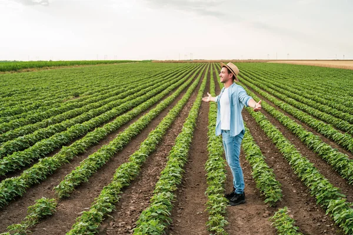
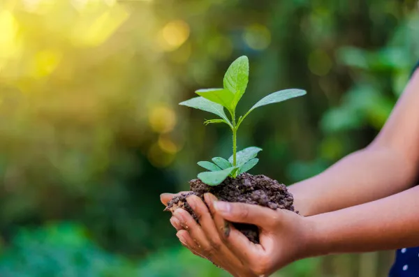

Kauan é um agrônomo dedicado que herdou uma fazenda de sua família. Infelizmente, devido a uma série de problemas financeiros e de gestão, ele está prestes a perder a fazenda. Determinado a salvar o legado da família, Kauan decide agir rapidamente.
Kauan decide buscar ajuda financeira e entra em contato com instituições de crédito e investidores. Ele tem duas opções: procurar um empréstimo bancário ou tentar obter fundos através de uma campanha de crowdfunding.
Kauan decide experimentar um novo método de cultivo. Ele pode optar por adotar técnicas de agricultura sustentável ou investir em tecnologia avançada para aumentar a produtividade.
Kauan decide procurar um empréstimo bancário. Infelizmente, o banco exige garantias que Kauan não pode fornecer.
Kauan lança uma campanha de crowdfunding e consegue mobilizar a comunidade. Com o apoio de muitos, ele arrecada fundos suficientes para manter a fazenda e melhorar suas operações.
A fazenda é salva e Kauan pode continuar trabalhando para melhorar suas técnicas de cultivo.
Kauan adota técnicas de agricultura sustentável, mas enfrenta dificuldades iniciais com a adaptação. Com o tempo, ele começa a ver melhorias na produção e na saúde do solo.
A longo prazo, as técnicas sustentáveis ajudam Kauan a estabilizar a fazenda.
Kauan investe em tecnologia avançada e aumenta significativamente a produtividade. No entanto, ele enfrenta desafios com o custo inicial e a manutenção dos equipamentos.

A tecnologia ajuda Kauan a superar os problemas financeiros, mas exige um gerenciamento cuidadoso.
Kauan tenta outras opções financeiras e consegue negociar com investidores locais que acreditam no potencial da fazenda. Com o novo suporte financeiro, ele pode manter a operação e investir em melhorias.
A fazenda é salva e Kauan tem uma nova chance para prosperar.